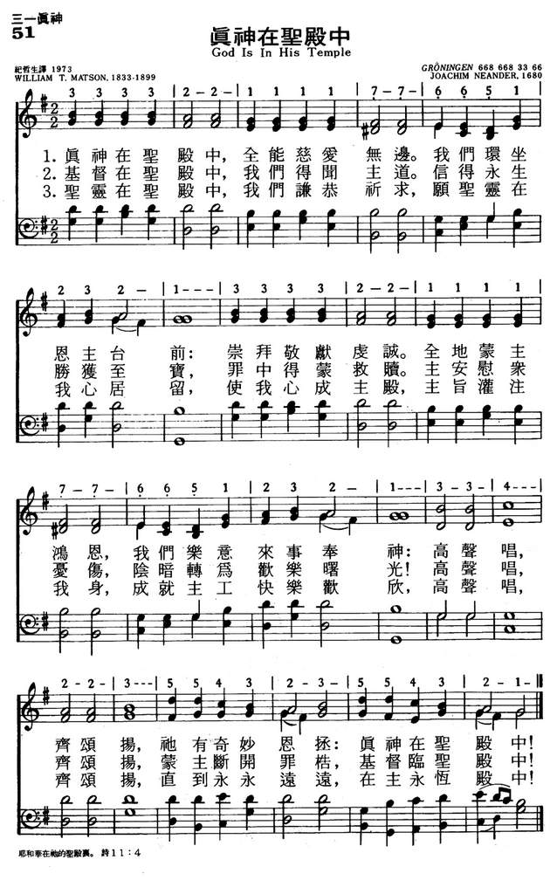
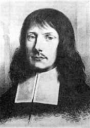

|
|
颂主新歌 |
|
1 God is in his temple, 2 Christ comes to his temple, 3 Come and claim thy temple, |
1.真神在圣殿中，全能慈爱无边。 |
|

|
|
|
|
|


https://youtu.be/bzfbV-CBAlE https://youtu.be/rsdcCVTX5wc -
God Is in His Temple · Metropolitan Tabernacle
https://youtu.be/BMFslmeS-DE
| Text: | God is in His temple |
| Author: | William Tidd Matson, 1833-99 |
| Tune: | GRÖNINGEN |
| Composer: | Joachim Neander, 1650-80 |
| Short Name: | William Tidd Matson |
| Full Name: | Matson, William Tidd, 1833- |
| Birth Year: | 1833 |
| Death Year: | 1899 |
Matson, William Tidd, was born at West Hackney, London, Oct. 17, 1833. He was educated first under the Rev. J. M. Gould, and then at St. John's College, Cambridge. Subsequently he studied under Professor Nesbitt, at the Agricultural and Chemical College, Kennington. In 1853 he underwent a great spiritual change. Leaving the Church of England, he first joined the Methodist New Connexion body, and then the Congregationalists. After the usual theological training, he entered the ministry, and held several pastorates, including Havant, Hants; Gosport; Highbury; Portsmouth, and others. His poetical works include:—
(1) A Summer Evening Reverie, and Other Poems, 1857; (2) Poems, 1858; (3) Pleasures of the Sanctuary, 1865; (4) The Inner Life, 1866; (5) Sacred Lyrics, 1870; (6) Three Supplemental Hymns, &c, 1872; (7) The World Redeemed, 1881, &c.
Several of Matson's hymns have been given in Allon's Supplemental Hymns; Horder's Congregational Hymns; The Baptist Hymnal; Dale's English Hymn Book.; Barrett's Congregational Church Hymnal, 1887, and others. The best known are:—
Tune Information
| Title: | ARNSBERG |
| Composer: | Joachim Neander (1680) |
| Meter: | 6.6.8.6.6.8.3.3.6.6 |
| Incipit: | 33332 21111 77665 |
| Key: | G Major |
| Source: | Glaub-und-Liebesubung, 1680;Joachim Neander's Bundes Leider, 1680 |
| Copyright: | Public Domain |
| Short Name: | Joachim Neander |
| Full Name: | Neander, Joachim, 1650-1680 |
| Birth Year: | 1650 |
| Death Year: | 1680 |
Neander, Joachim, was born at Bremen, in 1650,

as the eldest child of the marriage of Johann Joachim Neander and Catharina Knipping, which took place on Sept. 18, 1649, the father being then master of the Third Form in the Paedagogium at Bremen. The family name was originally Neumann (Newman) or Niemann, but the grandfather of the poet had assumed the Greek form of the name, i.e. Neander. After passing through the Paedagogium he entered himself as a student at the Gymnasium illustre (Academic Gymnasium) of Bremen in Oct. 1666. German student life in the 17th century was anything but refined, and Neander seems to have been as riotous and as fond of questionable pleasures as most of his fellows. In July 1670, Theodore Under-Eyck came to Bremen as pastor of St. Martin's Church, with the reputation of a Pietist and holder of conventicles. Not long after Neander, with two like-minded comrades, went to service there one Sunday, in order to criticise and find matter of amusement. But the earnest words of Under-Eyck touched his heart; and this, with his subsequent conversations with Under-Eyck, proved the turning-point of his spiritual life. In the spring of 1671 he became tutor to five young men, mostly, if not all, sons of wealthy merchants at Frankfurt-am-Main, and accompanied them to the University of Heidelberg, where they seem to have remained till the autumn of 1673, and where Neander learned to know and love the beauties of Nature. The winter of 1673-74 he spent at Frankfurt with the friends of his pupils, and here he became acquainted with P. J. Spener (q.v.) and J. J. Schütz (q.v.) In the spring of 1674 he was appointed Rector of the Latin school at Düsseldorf (see further below). Finally, in 1679, he was invited to Bremen as unordained assistant to Under-Eyck at St. Martin's Church, and began his duties about the middle of July. The post was not inviting, and was regarded merely as a stepping stone to further preferment, the remuneration being a free house and 40 thalers a year, and the Sunday duty being a service with sermon at the extraordinary hour of 5 a.m. Had he lived, Under-Eyck would doubtless have done his best to get him appointed to St. Stephen's Church, the pastorate of which became vacant in Sept., 1680. But meantime Neander himself fell into a decline, and died at Bremen May 31, 1680 (Joachim Neander, sein Leben und seine Lieder. With a Portrait. By J. F. Iken, Bremen, 1880; Allgemeine Deutsche Biographie, xxiii. 327, &c.)
Neander was the first important hymn-writer of the German Reformed Church since the times of Blaurer and Zwick. His hymns appear to have been written mostly at Düsseldorf, after his lips had been sealed to any but official work. The true history of his unfortunate conflict has now been established from the original documents, and may be summarized thus.
God is in his temple
God is in his temple. William Tidd Matson* (1833-1899). Matson’s poem was published in his Lays of Laud, Life & Litany (1891), and in his Poetical Works (1894), with the date 1872. It was printed in Supplemental Hymns (1868), edited by Henry Allon*. It has remained popular in Baptist, Methodist and Congregationalist/URC books. It was written to fit the tune GRONINGEN, ascribed to Joachim Neander*: God is in his temple, The Almighty Father;Round his footstool let us gather: Him with adoration Serve, the Lord most holy,Who hath mercy on the lowly; Let us raise Hymns of praise, For his great salvation: God is in his temple. The hymn has a strong resemblance to the German..
https://hymnology.hymnsam.co.uk/g/god-is-in-his-temple
Teach Me, O Lord, Thy Holy Will (William Tidd Matson)
Words: William Tidd Matson (b. Oct. 17, 1833; d. Dec. 23, 1899)
Music: Rimington, by Francis Duckworth (b. Dec. 25, 1862; d. Aug. 16, 1941)
Links:Wordwise Hymns (none)
The Cyber Hymnal
Hymnary.org
{kind=link}
Note: William Matson, an English clergyman, a significant spiritual
transformation in 1853–whether a conversion to Christ, or a spiritual revival.
He left the Anglicans, with whom he was associated, and joined the
Congregationalists, going on to serve as the pastor of several churches. He
wrote a number of books, and many hymns, though few of the latter are still in
use.
Historian John Julian classes his hymns “far above the average,” but he also
criticizes Matson’s poetry as “somewhat lacking in lyric energy” (Dictionary of
Hymnology, p. 719). William Garrett Horder, in The Hymn Lover: An Account of the
Rise and Growth of English Hymnody, calls the present song, “a very good hymn of
an ethical type, but with a very weak ending” (p. 296). Be that as it may, the
hymn is a worthy prayer for each of us who is a follower of Christ. The Cyber
Hymnal gives the date of publication as 1866.
The hymn seems to take its inspiration from appeals such as that in Psalm
86:11, which says:
“Teach me Your way, O LORD; I will walk in Your truth; unite my heart to fear
Your name [i.e. give me an undivided heart, committed to doing Your will].”
CH-1) Teach me, O Lord, Thy holy way,
And give me an obedient mind;
That in Thy service I may find
My soul’s delight from day to day.
CH-2) Guide me, O Saviour, with Thy hand,
And so control my thoughts and deeds,
That I may tread the path which leads
Right onward to the blessèd land.
Teach me (or teach us) is a frequent prayer to the Lord in the Scriptures,
particularly in the Psalms. Implied in it is a humble recognition of need, and
the faith to believe that God can meet the need, by His grace. Here are a few
examples:
¤ Faced with the prophesied birth of a son (Samson) Manoah his father prayed,
“Teach us what we shall do for the child who will be born” (Jud. 13:8)–a
wonderful prayer for any prospective parents.
¤ Elihu’s suggested prayer in Job 34:22 is, “Teach me what I do not see; if I
have done iniquity, I will do no more.” This is similar to David’s prayer, that
the Lord would show him any sin hidden within (Ps. 139:23-24).
¤ In Psalm 119, a lengthy psalm about the Word of God, the psalmist repeatedly
prays that the Lord will “teach me Your statues [Your decrees or ordinances, in
other words, God’s Law]” (Ps. 119: 12, 26, 33, 64, 68, 124, 135, 171). Cf.
“Teach me good judgment and knowledge, for I believe Your commandments” (vs.
66).
¤ “Teach me Your paths….On You I wait all the day” (Ps. 25:4-5). “Teach me Your
way” (Ps. 27:11). “Teach me to do Your will, for You are my God; Your Spirit is
good. Lead me in the land of uprightness” (Ps. 143:10).
¤ “Teach us to number our days, that we may gain a heart of wisdom [i.e. live
wisely]” (Ps. 90:12). We need to be aware of how little time we have on earth,
and make good use of it, investing what the Lord has given us wisely (cf. Eph.
5:15-17).
¤ “Now it came to pass, as He was praying in a certain place, when He ceased,
that one of His disciples said to Him, ‘Lord, teach us to pray’” (Lk. 11:1).
Put these together, and you can see the passion of a godly heart, to live to
please God, to serve God, and have a life that brings honour and glory to Him.
Pastor Matson’s hymn echoes many of the requests in the above prayers. This is
one of those hymns that can be read meaningfully, as a simple prayer, in your
daily devotions.
CH-3) Help, me, O Saviour, here to trace
The sacred footsteps Thou hast trod;
And, meekly walking with my God,
To grow in goodness, truth and grace.
CH-4) Guard me, O Lord, that I may ne’er
Forsake the right, or do the wrong;
Against temptation make me strong,
And round me spread Thy sheltering care.
CH-5) Bless me in every task, O Lord,
Begun, continued, done for Thee;
Fulfil Thy perfect work in me;
And Thine abounding grace afford.
Questions:
1) Why not try praying this prayer, thinking carefully about what you’re asking
for?
2) What, in your own life right now, is the most significant request made in the
hymn?
Links: Wordwise Hymns (none)
The Cyber Hymnal
Hymnary.org
Share this:
https://wordwisehymns.com/2014/09/26/teach-me-o-lord-thy-holy-will/